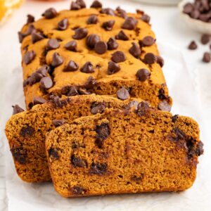

My Favorite Recipe
4 Ingredient Pumpkin Loaf

Ingredients
- 1 box spice cake mix, prefferably Duncan Hines
- 1 15 oz can of pumpkin puree
- 1/4 cup milk of choice
- 1 cup semi sweet chocolate chips
Instructions
- Preheat your oven to 350 degrees F and grease a 9 by 5 inch loaf pan or line it with parchment paper.
- In a large bowl, combine the spice cake mix, pumpkin puree, and milk. Stir until the batter is smooth and well combined.
Fold in the chocolate chips until evenly distributed throughout the batter. - Pour the batter into the prepared pan, spreading it evenly.
Bake for 45-50 minutes, or until a toothpick inserted into the center comes out clean. - Let the bread cool in the pan for about 10 minutes, then transfer to a wire rack to cool completely before slicing and serving.